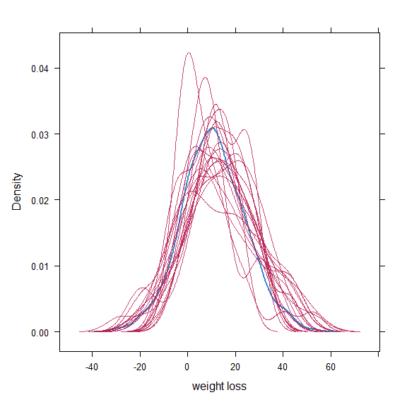

4 Data Imputation
4.1 Multiple Imputation
In this analysis we assume that the missing values are either missing completely at random or missing at random. Under this assumption, we use multiple imputation via the MICE package to impute the missing data. Let us start with visualising the missing data:
md.pattern(merged)We see that there are 27 observations only missing weight loss, 7 only missing the ECOG score, one missing both of them and 2 missing weight loss and Karnofsky score. We use the mice package to impute the missing data:
merged$sex = as.factor(merged$sex)
merged$ph.ecog = as.factor(merged$ph.ecog)
merged$medication = as.factor(merged$medication)
imputed_data <- mice(merged, m=20, seed = 101)summary(imputed_data)## Class: mids
## Number of multiple imputations: 20
## Imputation methods:
## id age sex ph.ecog ph.karno wt.loss medication
## "" "" "" "polyreg" "pmm" "pmm" ""
## event fu
## "" ""
## PredictorMatrix:
## id age sex ph.ecog ph.karno wt.loss medication event fu
## id 0 1 1 1 1 1 1 1 1
## age 1 0 1 1 1 1 1 1 1
## sex 1 1 0 1 1 1 1 1 1
## ph.ecog 1 1 1 0 1 1 1 1 1
## ph.karno 1 1 1 1 0 1 1 1 1
## wt.loss 1 1 1 1 1 0 1 1 1Here we chose 20 imputations, as suggested in Von Hippel (2020). We then fit a Cox Regression model to the imputed data and use the HowManyImputations package to check whether 20 imputations are enough to have consistent estimates.
models <- with(imputed_data,coxph(Surv(fu, event) ~ age+sex+ph.ecog+ph.karno+wt.loss+medication))
how_many_imputations(models)## [1] 5The suggested (minimum) number of imputations is below 20, so there is no need to create more imputations.
4.2 Checking Imputed Data
We plot the observed and imputed data together to check whether the imputed values are plausible compared to the observed values. Let us focus on the weight loss covariate, which was by far the main source of missingness.
stripplot(imputed_data, wt.loss ~ .imp,
col = c("gray", "black"),
pch = c(21, 20),
cex = c(1, 1.5))
The stripplot function plots the observed data (labeled as 1 on the x-axis), and plots the observed and imputed data together for each completed dataset (labeled as 2 to the number of imputations + 1 on the x-axis). Here we see that the imputed values are not far away from the distribution of the observed values and they do not only span a subset of the distribution of the observed values.
We can also compare the density of the weight loss covariate in each imputed dataset and compare it with the density in the observed data:
densityplot(imputed_data, xlab = "weight loss")
Also this plot shows imputed distributions in line with the distribution in the observed data.